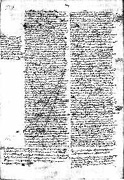
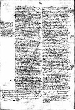

|  |
|---|
Fragmenta ab A. Dondaine 1956 edita
recognovit Enrique Alarcón et instruxit


|  |
|---|


[92365] Priora Super Sent., lib. 3 d. 1 q. 1 a. 1 ad 2  Ad secundum dicendum, quod illud quod est perfectum in se, non unitur alteri ad acquirendum aliquam perfectionem, sed ad communicandum: et sic Deus homini uniri voluit non propter se, quia non habet quo crescat eius perfectio, set propter hominem cui subveniendum erat. Ad tertium sic enim sicut etiam Deus est in omnibus per essentiam, praesentiam et potentiam, suam bonitatem in omnibus diffundendo; ex quo tamen nichil sibi accrescit.
Ad secundum dicendum, quod illud quod est perfectum in se, non unitur alteri ad acquirendum aliquam perfectionem, sed ad communicandum: et sic Deus homini uniri voluit non propter se, quia non habet quo crescat eius perfectio, set propter hominem cui subveniendum erat. Ad tertium sic enim sicut etiam Deus est in omnibus per essentiam, praesentiam et potentiam, suam bonitatem in omnibus diffundendo; ex quo tamen nichil sibi accrescit.
[92366] Priora Super Sent., lib. 3 d. 1 q. 1 a. 2 arg. 5  Praeterea, nulla crudelitas Deo est attribuenda, quia summe est misericors. Sed exigere ab aliquo plus quam potest, est crudele. Ergo Deus non exigit satisfactionem ab homine quam homo non potest implere; et ita homo per se potest satisfacere: et sic non fuit necessarium quod Deus incarnaretur.
Praeterea, nulla crudelitas Deo est attribuenda, quia summe est misericors. Sed exigere ab aliquo plus quam potest, est crudele. Ergo Deus non exigit satisfactionem ab homine quam homo non potest implere; et ita homo per se potest satisfacere: et sic non fuit necessarium quod Deus incarnaretur.
[92367] Priora Super Sent., lib. 3 d. 1 q. 1 a. 2 ad 4  Ad quartum dicendum, quod quamvis Deus sit summe misericors, sua tamen misericordia nullo modo justitiae suae obviat. Misericordia enim quae justitiam tollit, magis stultitia quam virtus dici debet; et ita Deum non decet: propter quod Deus misericordiam infinitam sic manifestare voluit, ut in nullo ejus justitiae derogaretur; quod factum est, dum pro nobis homo factus est, ut pro nobis satisfaceret: in quo etiam ejus abundantior misericordia ostensa est ad nos, quam si peccatum sine satisfactione dimisisset, inquantum naturam nostram magis exaltavit, et pro nobis mortem pertulit. Nec tamen est simile de homine et de Deo, propter duo. Primo, quia ipse Deus est judex omnium, ad quem pertinet justitiae ordinem servare, non autem homo quilibet; unde et judex non debet proprio arbitrio peccata dimittere impunita. Secundo, quia cum Deus sit ipsa bonitas, ex hoc ipso est aliquod malum quod contra ipsum est; et ideo cum poena non debeatur actui nisi quia malus est; decet ut ipse se vindicet puniendo peccatum quod contra ipsum commissum est. Secus autem est de homine; unde homo non debet punire quasi se vindicans, sed quasi Deum vindicans, si hoc ex officio habet. Unde dicitur Deut. 32, 35, secundum aliam litteram: mihi vindictam, et ego retribuam.
Ad quartum dicendum, quod quamvis Deus sit summe misericors, sua tamen misericordia nullo modo justitiae suae obviat. Misericordia enim quae justitiam tollit, magis stultitia quam virtus dici debet; et ita Deum non decet: propter quod Deus misericordiam infinitam sic manifestare voluit, ut in nullo ejus justitiae derogaretur; quod factum est, dum pro nobis homo factus est, ut pro nobis satisfaceret: in quo etiam ejus abundantior misericordia ostensa est ad nos, quam si peccatum sine satisfactione dimisisset, inquantum naturam nostram magis exaltavit, et pro nobis mortem pertulit. Nec tamen est simile de homine et de Deo, propter duo. Primo, quia ipse Deus est judex omnium, ad quem pertinet justitiae ordinem servare, non autem homo quilibet; unde et judex non debet proprio arbitrio peccata dimittere impunita. Secundo, quia cum Deus sit ipsa bonitas, ex hoc ipso est aliquod malum quod contra ipsum est; et ideo cum poena non debeatur actui nisi quia malus est; decet ut ipse se vindicet puniendo peccatum quod contra ipsum commissum est. Secus autem est de homine; unde homo non debet punire quasi se vindicans, sed quasi Deum vindicans, si hoc ex officio habet. Unde dicitur Deut. 32, 35, secundum aliam litteram: mihi vindictam, et ego retribuam.
[92368] Priora Super Sent., lib. 3 d. 1 q. 1 a. 2 ad 6  Ad sextum dicendum, quod quantitas originalis et actualis mortalis peccati potest dupliciter attendi: vel quantum ad principium, vel quantum ad bonum quod per utrumque privatur. Principium autem actualis peccati voluntas propria est; principium autem originalis in isto, est origo ejus vitiata; unde originale quodammodo est necessarium; sed actuale est omnino voluntarium: unde plus habet de ratione culpae et vituperabilis. Bonum autem quod per actuale peccatum corrumpitur, est bonum hujus personae, cui praeponderat bonum totius naturae, quod per originale corrumpitur; quia bonum gentis est divinius quam bonum unius hominis, ut dicitur 1 Ethic. Unde et originale pejus erit quam actuale, ut sic possit dici, quod actuale est major culpa, et originale majus malum. Actio autem satisfacientis, ut prius dictum est, proportionatur quantitati culpae ex parte boni quod per culpam corrumpitur: et cum omnis actio sit personae, quia actus singularium sunt, ideo ad satisfactionem pro actuali sufficit actus cujuscumque hominis cum gratia divina; non autem ad satisfaciendum pro originali peccato, nisi actio illius hominis plus valeret quam totum bonum humanae naturae: et hoc non posset esse, si esset purus homo; et ideo oportuit esse Deum et hominem qui pro originali satisfaceret. Vel dicendum secundum quosdam, quod etiam pro actuali peccato non sufficit purus homo satisfacere, nisi praesupposita satisfactione Christi, ex cujus passione etiam antiquorum patrum satisfactio efficax fuit, qui in fide ejus salvabantur.
Ad sextum dicendum, quod quantitas originalis et actualis mortalis peccati potest dupliciter attendi: vel quantum ad principium, vel quantum ad bonum quod per utrumque privatur. Principium autem actualis peccati voluntas propria est; principium autem originalis in isto, est origo ejus vitiata; unde originale quodammodo est necessarium; sed actuale est omnino voluntarium: unde plus habet de ratione culpae et vituperabilis. Bonum autem quod per actuale peccatum corrumpitur, est bonum hujus personae, cui praeponderat bonum totius naturae, quod per originale corrumpitur; quia bonum gentis est divinius quam bonum unius hominis, ut dicitur 1 Ethic. Unde et originale pejus erit quam actuale, ut sic possit dici, quod actuale est major culpa, et originale majus malum. Actio autem satisfacientis, ut prius dictum est, proportionatur quantitati culpae ex parte boni quod per culpam corrumpitur: et cum omnis actio sit personae, quia actus singularium sunt, ideo ad satisfactionem pro actuali sufficit actus cujuscumque hominis cum gratia divina; non autem ad satisfaciendum pro originali peccato, nisi actio illius hominis plus valeret quam totum bonum humanae naturae: et hoc non posset esse, si esset purus homo; et ideo oportuit esse Deum et hominem qui pro originali satisfaceret. Vel dicendum secundum quosdam, quod etiam pro actuali peccato non sufficit purus homo satisfacere, nisi praesupposita satisfactione Christi, ex cujus passione etiam antiquorum patrum satisfactio efficax fuit, qui in fide ejus salvabantur.
[92369] Priora Super Sent., lib. 3 d. 1 q. 1 a. 3 co.  Respondeo dicendum, quod hujus quaestionis veritatem solus ille scire potest qui natus et oblatus est, quia voluit. Ea enim quae ex sola Dei voluntate dependent, nobis ignota sunt, nisi inquantum nobis innotescunt per auctoritates sanctorum, quibus Deus suam voluntatem revelavit: et quia in canone Scripturae et dictis sanctorum expositorum, haec sola assignatur causa incarnationis, redemptio scilicet hominis a servitute peccati, probabilius videtur, sine assertione tamen, dicendum, quod si homo non pecasset, filius Dei homo factus non fuisset.
Respondeo dicendum, quod hujus quaestionis veritatem solus ille scire potest qui natus et oblatus est, quia voluit. Ea enim quae ex sola Dei voluntate dependent, nobis ignota sunt, nisi inquantum nobis innotescunt per auctoritates sanctorum, quibus Deus suam voluntatem revelavit: et quia in canone Scripturae et dictis sanctorum expositorum, haec sola assignatur causa incarnationis, redemptio scilicet hominis a servitute peccati, probabilius videtur, sine assertione tamen, dicendum, quod si homo non pecasset, filius Dei homo factus non fuisset.
[92370] Priora Super Sent., lib. 3 d. 1 q. 1 a. 3 ad s. c.  Ad ea vero quae in contrarium objiciuntur, potest responderi secundum aliam opinionem, quod auctoritates illae loquuntur de adventu in carnem passibilem ad redimendum (redemptio enim non fuisset, nisi servitus peccati praecessisset) et non de adventu in carnem simpliciter.
Ad ea vero quae in contrarium objiciuntur, potest responderi secundum aliam opinionem, quod auctoritates illae loquuntur de adventu in carnem passibilem ad redimendum (redemptio enim non fuisset, nisi servitus peccati praecessisset) et non de adventu in carnem simpliciter.
[92371] Priora Super Sent., lib. 3 d. 1 q. 2 a. 2 arg. 5  Item, per incarnationis mysterium facta est reconciliatio humani generis Item, eorum que magis vicina sunt, decentior est coniunctio. Set spiritus sanctus est persona magis nobis vicina, ut dicit Augustinus. Ergo spiritum sanctum magis decebat incarnari quam filium.
Item, per incarnationis mysterium facta est reconciliatio humani generis Item, eorum que magis vicina sunt, decentior est coniunctio. Set spiritus sanctus est persona magis nobis vicina, ut dicit Augustinus. Ergo spiritum sanctum magis decebat incarnari quam filium.
[92372] Priora Super Sent., lib. 3 d. 1 q. 2 a. 4 arg. 6  Praeterea, si tres personae unam naturam humanam assumerent, aut essent unus homo, aut plures. Sed non plures, quia non haberent nisi unam animam et unum corpus. Ergo esset unus homo, et posset demonstrari: iste homo est pater et filius et spiritus sanctus. Sed ille homo non potest supponere nisi personam patris vel filii vel spiritus sancti. Ergo persona patris esset pater et filius et spiritus sanctus, vel persona filii, vel persona spiritus sancti; quod est impossibile. Ergo impossibile est talem assumptionem esse.
Praeterea, si tres personae unam naturam humanam assumerent, aut essent unus homo, aut plures. Sed non plures, quia non haberent nisi unam animam et unum corpus. Ergo esset unus homo, et posset demonstrari: iste homo est pater et filius et spiritus sanctus. Sed ille homo non potest supponere nisi personam patris vel filii vel spiritus sancti. Ergo persona patris esset pater et filius et spiritus sanctus, vel persona filii, vel persona spiritus sancti; quod est impossibile. Ergo impossibile est talem assumptionem esse.
[92373] Priora Super Sent., lib. 3 d. 1 q. 2 a. 4 co.  Responsio. Dicendum quod circa hoc sunt due opiniones. Quidam enim dicunt, quod plures persone divine possent unum hominem assumere, non quidem unum qui esset persona una, set unitate unius nature singularis. Quidam vero e contrario dicunt, quod hoc fieri non posset, ad minus servato hoc modo unionis qualis est in incarnatione filii, ut communicatio ydiomatum utrinque fieret. Et huic opinioni suffragari videtur Anselmus in libro cur Deus homo. Set quia potentie absolute de qua loquimur nichil subtrahendum videtur quod vel manifeste in defectum Dei non vergat, ut passio et mutatio, nisi etiam contradictionem implicet, ideo sine assertione videtur magis catholice dicendum quod tres persone eandem numero naturam humanam assumere possent, ita tamen quod in una et eadem natura creata tres persone divine subsisterent, sicut subsistunt in una natura divina. Constat enim quod per hoc nulla passio in Deo ponitur, nec etiam in hoc aliqua contradictio implicatur: pluralitas enim personarum unitati nature non repugnat.
Responsio. Dicendum quod circa hoc sunt due opiniones. Quidam enim dicunt, quod plures persone divine possent unum hominem assumere, non quidem unum qui esset persona una, set unitate unius nature singularis. Quidam vero e contrario dicunt, quod hoc fieri non posset, ad minus servato hoc modo unionis qualis est in incarnatione filii, ut communicatio ydiomatum utrinque fieret. Et huic opinioni suffragari videtur Anselmus in libro cur Deus homo. Set quia potentie absolute de qua loquimur nichil subtrahendum videtur quod vel manifeste in defectum Dei non vergat, ut passio et mutatio, nisi etiam contradictionem implicet, ideo sine assertione videtur magis catholice dicendum quod tres persone eandem numero naturam humanam assumere possent, ita tamen quod in una et eadem natura creata tres persone divine subsisterent, sicut subsistunt in una natura divina. Constat enim quod per hoc nulla passio in Deo ponitur, nec etiam in hoc aliqua contradictio implicatur: pluralitas enim personarum unitati nature non repugnat.
[92374] Priora Super Sent., lib. 3 d. 1 q. 2 a. 4 ad 2  Ad secundum dicendum, quod assumptio illa terminaretur ad aliquid unum in persona, non ita quod uni tantum persone uniretur, set quia a qualibet trium personarum assumeretur in unitatem persone, ut non esset i alia persona hominis assumpti et patris, et alia hominis et filii a tribus a tribus personis patris et filii et spiritus sancti quasi homo per se inquantum homo sit persona esset tamen alia persona patris, alia filii, alia spiritus sancti humanitatem eamdem assumentium.
Ad secundum dicendum, quod assumptio illa terminaretur ad aliquid unum in persona, non ita quod uni tantum persone uniretur, set quia a qualibet trium personarum assumeretur in unitatem persone, ut non esset i alia persona hominis assumpti et patris, et alia hominis et filii a tribus a tribus personis patris et filii et spiritus sancti quasi homo per se inquantum homo sit persona esset tamen alia persona patris, alia filii, alia spiritus sancti humanitatem eamdem assumentium.